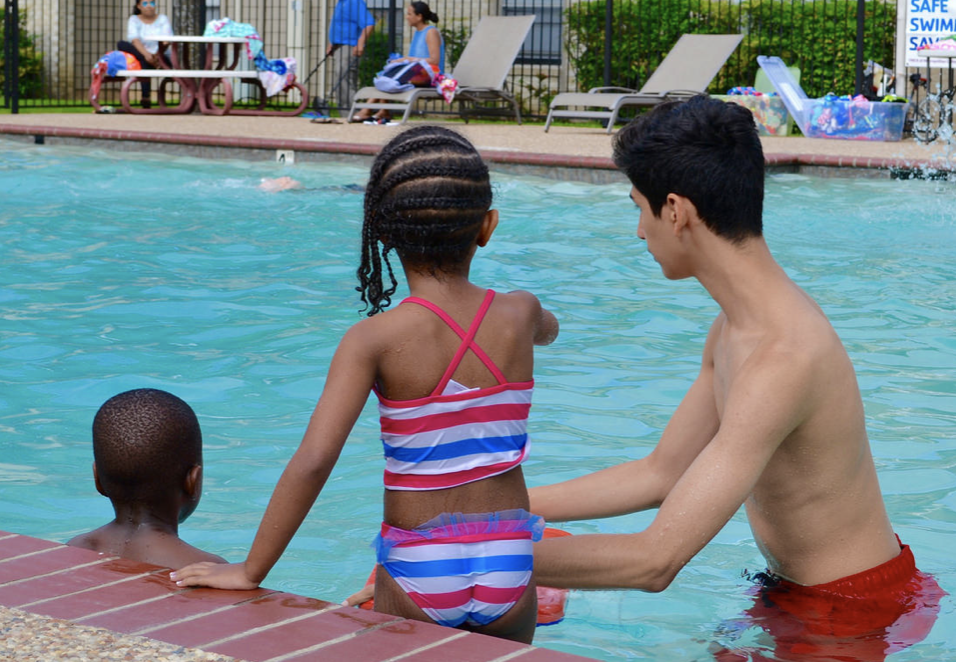

Know Before You Go is a drowning prevention and water safety education program created to educate the Dallas-Fort Worth area community on the dangers of drowning and the rules of effective water safety.
Children’s Health, YMCA of Metropolitan Dallas, Alliance Data, Safe Kids Greater Dallas Coalition and Independent Pool and Spa Service Association (IPSSA) have partnered to provide the area with effective swimming safety presentations and on-going educational information.
History
Know Before You Go was created in 2002 as a collaborate effort between Children’s Health (then, Children’s Medical Center), YMCA of Metropolitan Dallas, Alliance Data, Safe Kids Greater Dallas Coalition, and the Independent Pool and Spa Service Association (IPSSA). The program was built to address the increasing number of drowning and near-drowning incidents in children living in the Dallas-Fort Worth area. Since its start Know Before You Go has expanded water safety education and resources into school districts, apartment complexes, backyard pools, and high-risk communities. Our approach is to partner with organizations and community leaders to serve over 3,000 children and adults per year. Research is a core component of the program, allowing us to provide evidence-based curricula to better serve our communities.